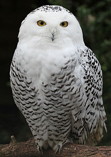

Harry Potter's faithful messenger and pet snowy owl in the Harry Potter novels by J. K. Rowling. Hedwig, the snowy owl from the Harry Potter movies, was actually played by seven different birds over the course of the franchise. Author J.K. Rowling has spoken about some inaccuracies she made in writing about the snowy owl in the books. "I made a few elementary mistakes when it came to my depiction of Hedwig," she said per Pottermore. "Firstly, Snowy Owls are diurnal (i.e., they fly by day). Secondly, they are virtually mute, so Hedwig's frequent hoots and chirrups of approval and comfort should be taken as signs of her magically enhanced abilities. Thirdly, as countless well-meaning owl-lovers and experts kept writing to me in the early days, owls do not eat bacon (Hedwig enjoys a bit of bacon rind when she delivers post at breakfast)."
